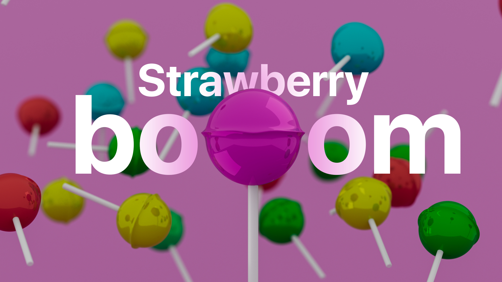
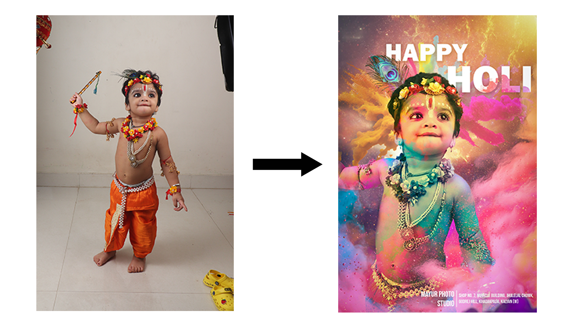
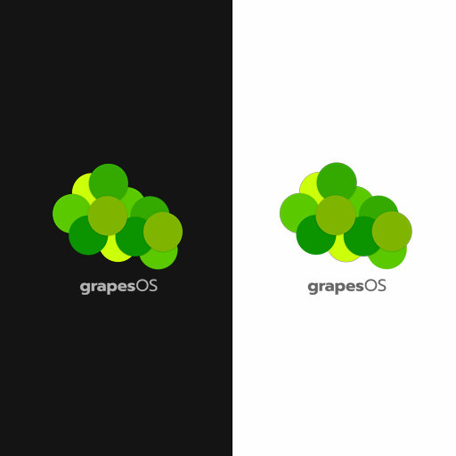

Graphics Design
This field gives you the power to create whatever you have in your mind. The digital canvas here is your playground. I like to create aesthetically pleasing artworks that tell a story. Check them out!

Strawberry Boom
This is a shot from Mahalshej Ghat mountain range, during monsoon. The greenery, low light and wet-empty road all of 'em contribute to this beautiful scenery in itself. I wish I would have taken the shot at the center of the road, but its fine!

Baby Krishna
This shot was taken in our studio (by my parents) and I just designed a nice poster out of it in Adobe Photoshop. Played with Z-index here a lot. The color powder smoke is everywhere, blending the character into the place. Used screen overlay over the baby's face to show the color mischief. The design thinking was to show Krishna's "Leela" in this image, which kind of tells a story.
Release Poster
Nothing really special here, but I designed this poster to announce the scheduled release of my Roblox game. The background was made by me in Roblox Studio, but I blurred it with some noise to give that mysterious look. The typography was designed between readability and creativity. I think they're doing an excellent job!

grapesOS Logo
I designed this logo for my personal project, an Operating System (like Windows, macOS, etc). There are 6 pairs of grapes of the same shade spaced equally in mutually random direction. This signifies the modular architecture of the system. Moreover, I made both variants of the same with adaptive typefacing.